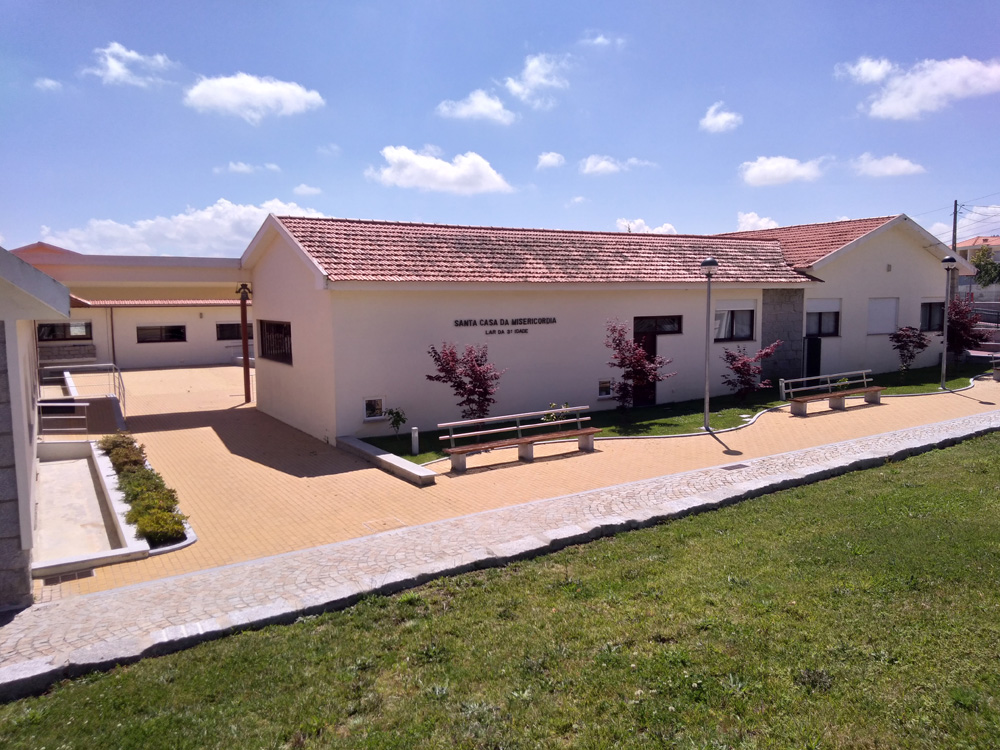

Recursos

Centros de Dia para Idosos
- Santa casa da misericordia moimenta da beira
- Casa do Povo de Leomil
- Lar do centro comunitário de Alvite
Infantários e Creches
- Jardim De Infância De Leomil
- Eq. Social do Centro De Bem Estar E Repouso da Paroquia De Sever
- Equipamento Social da Associação De Cultura E Recreio De Vila da Rua
- Jardim De Infância da Associação Moimentense De Apoio À Infância
- Jardim Infantil De Moimenta da Beira
Outros
- Associação Moimentense de Apoio à Infância

A promoção da Saúde e a prevenção da doença são dois pilares dos Cuidados de Saúde Primários. Aqui poderá encontrar diversos documentos que o podem ajudar a viver melhor.
- Planeamento Familiar
- Saúde Materna
- Vacinação
- HTA
- Diabetes
- Tabaco
- Outros Problemas de Saúde